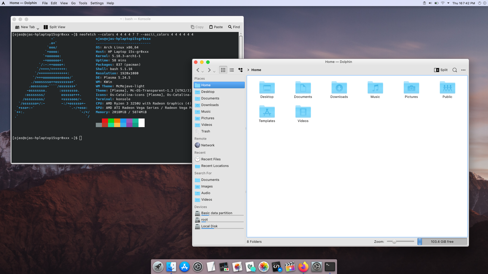

What to do after installing Arch Linux?
A vanilla Arch Linux installation gives you your base operating system with no utilities, allowing you to choose what you want your Operating System to behave like. This allows the user to have complete access over their operating system. A vanilla installation leaves you with nothing more than just a black screen which is for you to customize. In this module, we’ll be walking through the essential things to do after installing Arch Linux.
1. Update The System
Conclusion
A vanilla Arch Linux installation gives you your base operating system with no utilities, allowing you to choose what you want your Operating System to behave like. This allows the user to have complete access over their operating system. A vanilla installation leaves you with nothing more than just a black screen which is for you to customize. In this module, we’ll be walking through the essential things to do after installing Arch Linux.